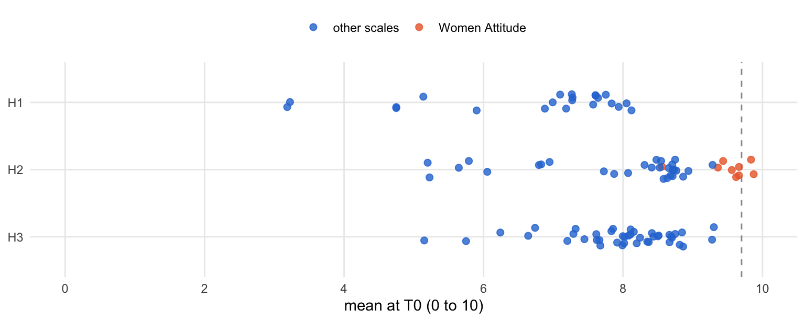
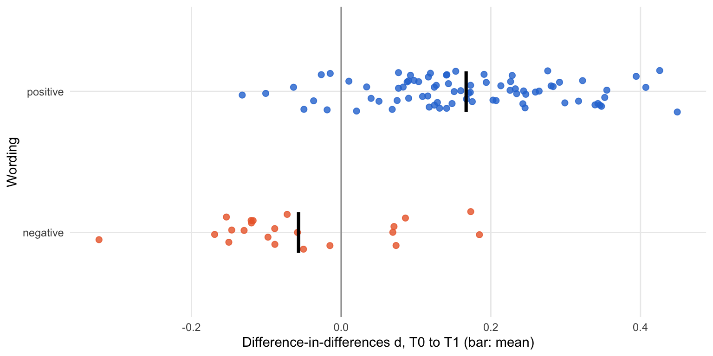
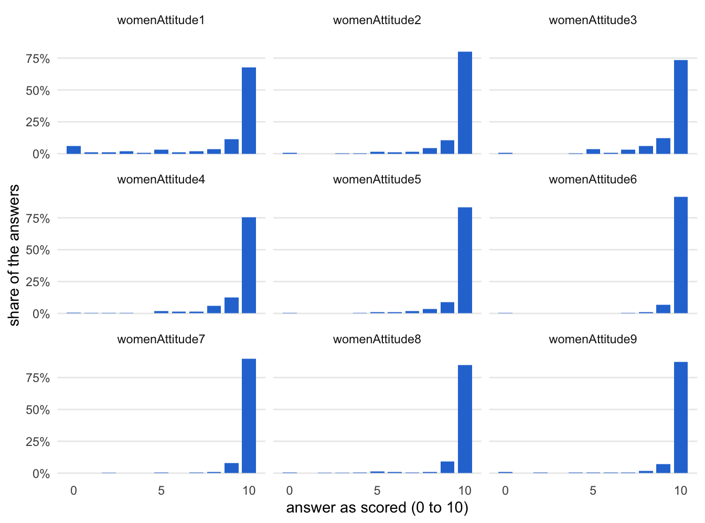

source("R/packages.R") # all packages (Chapter 1)
source("R/settings.R") # waves, conditions, folders (Chapter 1)
df <- readRDS("cache/df.rds") # one row per questionnaire (Chapter 2)
df_wide <- readRDS("cache/df_wide.rds") # one row per person (Chapter 2)
item_names <- names(select(df, ListenOther1:CompetenceNonFrustrated4))
source("R/scales.R") # the 23 scales (Chapter 2)15. Item pruning
NoteAbout this chapter
The preregistration allowed a psychometric study that would “discard unreliable and redundant items to create more parsimonious measures”. Part D carries it out after the fact, on the questionnaires answered before any training (T0). This chapter takes items out of the pool by three rules before any network is estimated: answers at the ceiling, negative wording, and the block on attitudes toward women. Each rule goes through the same five steps, from the items it looks at to what its decision means for the scales; on the way, the chapter shows that the negatively worded items hardly respond to the training. A table at the end follows every scale through the three rules. Feeds the pruning step of the psychometric supplement; Chapters 16 to 18 build on the remaining pool.
15.1 How each rule is examined
What happens to each rule? The same five steps, in the same order and in three parts: the rule, its evidence, and what follows. The diagram shows the path; the list below describes each step.
flowchart TB
subgraph P0["the rule"]
direction LR
S1["<b>Step 1</b><br>the starting point"]
S1 --> S2["<b>Step 2</b><br>the rule"]
end
subgraph P1["the evidence: January"]
direction LR
S3["<b>Step 3</b><br>the evidence"]
S3 --> S4{{"<b>Step 4</b><br>the result"}}
end
V["<b>Step 5</b><br>what follows"]
P0 --> P1
P1 --> V
classDef all fill:#efeff2,stroke:#8a8a8a,color:#1d1d1f
classDef verdict fill:#ffffff,stroke:#1d1d1f,color:#1d1d1f
class S1,S2,S3,S4 all
class V verdict
style P0 fill:#fafafa,stroke:#8a8a8a
style P1 fill:#fafafa,stroke:#8a8a8a
The five steps in detail:
The rule:
- The starting point. The items the rule looks at, in their wording where it matters, and how many items are still in the pool when the rule applies.
- The rule. When an item leaves the pool, and why. The rules apply in a fixed order: ceiling, negative wording, the women’s attitude block. An item that meets more than one rule leaves under the first.
The evidence:
- The evidence. The numbers on which the rule decides, item by item, in the T0 questionnaires: for the ceiling, the mean of each item, which must not lie above 9.7 on the scale from 0 to 10; for negative wording, how strongly each item moves while the experimental group trains (a difference-in-differences d from T0 to T1), compared between the positively and the negatively worded items; for the women’s attitude block, how the answers spread over the scale.
- The result. Which items leave, and how many stay in the pool.
What follows:
- What follows. What the decision means for the scales, and where the remaining items go next.
15.2 Data and tools
Which data? The T0 questionnaires of both groups decide every rule: everyone answered them before the first training, so no training effect can shape the structure. The evidence on negative wording adds T1, the end of the first training window:
t0 <- filter(df, Occasion == "T0")
t0_t1 <- filter(df, Occasion %in% c("T0", "T1"))
t0 |>
count(condition)| condition | n |
|---|---|
| Control | 178 |
| Experimental | 180 |
The calibration sample holds 358 questionnaires, 178 of the control group and 180 of the experimental group. The later waves serve to check whether the structure repeats (Chapters 16 to 18).
Which tools? The analysis of each rule is written out below. The wording of the items and a small function that draws the answers of a block, as in Chapter 6, are defined once here:
# the share of each answer (0 to 10), one panel per item
plot_answers <- \(items) {
items |>
pivot_longer(everything(), names_to = "item", values_to = "answer") |>
filter(!is.na(answer)) |>
count(item, answer) |>
mutate(share = n / sum(n), .by = item) |>
mutate(item = factor(item, levels = names(items))) |>
ggplot(aes(answer, share)) +
geom_col(fill = "#2a78d6", width = .8) +
facet_wrap(~ item, ncol = 3) +
scale_x_continuous(breaks = c(0, 5, 10)) +
scale_y_continuous(labels = scales::label_percent()) +
labs(x = "answer as scored (0 to 10)", y = "share of the answers") +
theme_minimal(base_size = 11) +
theme(panel.grid.minor = element_blank(),
panel.grid.major.x = element_blank())
}# The wording of every item (English version of the questionnaire), under
# the names of the analysis file (Chapter 2), and the reverse-keyed items
need <- \(numbers) paste0("needSatisfaction", numbers)
wording_names <- c(
"Alienation1" = "NoAlienation1", "Alienation2" = "NoAlienation2",
"Isolation1" = "NoIsolation1", "Isolation2" = "NoIsolation2",
set_names(paste0("AutonomySatisfaction", 1:4), need(c(1, 7, 13, 19))),
set_names(paste0("AutonomyNonFrustrated", 1:4), need(c(2, 8, 14, 20))),
set_names(paste0("RelatednessSatisfaction", 1:4), need(c(3, 9, 15, 21))),
set_names(paste0("RelatednessNonFrustrated", 1:4), need(c(4, 10, 16, 22))),
set_names(paste0("CompetenceSatisfaction", 1:4), need(c(5, 11, 17, 23))),
set_names(paste0("CompetenceNonFrustrated", 1:4), need(c(6, 12, 18, 24)))
)
item_wording <- read_csv("data/item_labels.csv", show_col_types = FALSE) |>
transmute(item = coalesce(wording_names[column_name], column_name),
text = str_squish(label_en))
# answered on the reverse scale and turned around in Chapter 2
reverse_keyed <- c(str_c("NoAlienation", 1:2), str_c("NoIsolation", 1:2),
"Flourishing5", "Flourishing6", str_c("Rogerian", 7:9),
"ToleranceDiversity1",
str_c(rep(c("Autonomy", "Relatedness", "Competence"),
each = 4), "NonFrustrated", rep(1:4, 3)))15.3 The three rules
Which rules, in which order? First the ceiling, which concerns single items; then negative wording, which concerns the direction in which an item is asked; last the women’s attitude block, which concerns a whole scale.
Ceiling
Its path through the steps. One row per step below; the rule decides on the January questionnaires January:
| Step | Question | Result | Next |
|---|---|---|---|
| 2 | When is an item at the ceiling? | when its mean at T0 lies above 9.7 | evidence |
| 3 | How high do the items lie at T0? | the eight highest all belong to Women Attitude | result |
| 4 | Which items cross the line? | two items of Women Attitude, left out of its score already | what follows |
| 5 | Where next? | the other items go on to the second rule | negative wording |
The rule · Steps 1 and 2
Step 1 · The starting point January
Which items does the rule look at? All items of the 23 scales, in the T0 questionnaires:
scales |>
mutate(items = lengths(scale_items[scale])) |>
summarise(scales = n(), items = sum(items), .by = block)| block | scales | items |
|---|---|---|
| H1 | 8 | 22 |
| H2 | 5 | 38 |
| H3 | 10 | 42 |
The rule starts from the full pool: 102 items in 23 scales, answered in 358 questionnaires.
Next → Step 2, the rule: When is an item at the ceiling?
Step 2 · The rule January
When is an item at the ceiling? When its mean at T0 lies above 9.7 on the scale from 0 to 10:
ceil_cutoff <- 9.7Such an item has almost no variance to share with other items, so a network can hardly place it, and it has no room left to improve with the training.
Next → Step 3, the evidence: How high do the items lie at T0?
The evidence · Steps 3 and 4
Step 3 · The evidence January
How high do the items lie at T0? The mean of every item, highest first:
ceil_means <- t0 |>
summarise(across(all_of(item_names), \(x) mean(x, na.rm = TRUE))) |>
pivot_longer(everything(), names_to = "item", values_to = "mean_T0") |>
mutate(scale = str_remove(item, "[0-9]+$")) |>
arrange(desc(mean_T0))
ceil_means |>
slice_head(n = 12) |>
mutate(mean_T0 = round(mean_T0, 2))| item | mean_T0 | scale |
|---|---|---|
| womenAttitude6 | 9.87 | womenAttitude |
| womenAttitude7 | 9.84 | womenAttitude |
| womenAttitude9 | 9.66 | womenAttitude |
| womenAttitude5 | 9.66 | womenAttitude |
| womenAttitude8 | 9.62 | womenAttitude |
| womenAttitude2 | 9.56 | womenAttitude |
| womenAttitude4 | 9.44 | womenAttitude |
| womenAttitude3 | 9.36 | womenAttitude |
| RelatednessSatisfaction2 | 9.30 | RelatednessSatisfaction |
| ToleranceDiversity1 | 9.28 | ToleranceDiversity |
| RelatednessSatisfaction3 | 9.28 | RelatednessSatisfaction |
| Rogerian1 | 8.94 | Rogerian |
All 102 means at once, by hypothesis block; orange: the items of Women Attitude, dashed: the cutoff.
ceil_means |>
left_join(select(scales, scale, block), by = "scale") |>
mutate(group = if_else(scale == "womenAttitude", "Women Attitude",
"other scales")) |>
ggplot(aes(x = mean_T0, y = fct_rev(block), colour = group)) +
geom_vline(xintercept = ceil_cutoff, colour = "grey60", linetype = 2) +
geom_point(position = position_jitter(height = .15, seed = 1),
size = 2, alpha = .8) +
scale_colour_manual(values = c(`Women Attitude` = "#eb6834",
`other scales` = "#2a78d6")) +
scale_x_continuous(limits = c(0, 10), breaks = seq(0, 10, by = 2)) +
labs(x = "mean at T0 (0 to 10)", y = NULL, colour = NULL) +
theme_minimal(base_size = 11) +
theme(legend.position = "top", panel.grid.minor = element_blank())
The means run from 3.18 to 9.87, half of them above 8.06. The eight highest all belong to Women Attitude.
Next → Step 4, the result: Which items cross the line?
Step 4 · The result January
Which items cross the line?
ceil_items <- ceil_means |>
filter(mean_T0 > ceil_cutoff) |>
pull(item)
ceil_items[1] "womenAttitude6" "womenAttitude7"Two items cross the line, womenAttitude6 and womenAttitude7; the other 100 items stay in the pool.
Next → Step 5, what follows: Where do the two items go?
What follows · Step 5
Step 5 · What follows
Where do the two items go? They are the two items that Chapter 2 already leaves out of the Women Attitude score, so the preregistered analyses lose nothing by this rule. The other seven items of the block stay for now; the third rule takes up the block as a whole. The 100 items go on to the second rule.
Negative wording
Its path through the steps. One row per step below; the rule starts from the January questionnaires January, its evidence compares both groups from T0 to T1 both groups:
| Step | Question | Result | Next |
|---|---|---|---|
| 2 | When does an item leave? | every negatively worded item leaves | evidence |
| 3 | How strongly does an item move with the training? | a difference-in-differences d per item, positive against negative wording | result |
| 4 | Which scales lose items? | five scales of negatively worded items only are emptied | what follows |
| 5 | Where next? | three scales keep their positive items; the rest go on to the third rule | the women’s attitude block |
The rule · Steps 1 and 2
Step 1 · The starting point January
Which items does the rule look at? The items that were asked the other way round, so that agreeing with them means less of the construct; Chapter 2 turns them around (reverse-keyed):
neg_items <- reverse_keyed
item_wording |>
filter(item %in% neg_items) |>
mutate(scale = str_remove(item, "[0-9]+$"), .after = item)| item | scale | text |
|---|---|---|
| NoAlienation1 | NoAlienation | Nowadays things are so confusing that you sometimes do not know where you stand. |
| NoAlienation2 | NoAlienation | Nowadays things are so complex that you sometimes do not know what is going on. |
| Flourishing5 | Flourishing | Are you depressed? (0 = Not at all depressed, 10 = Very depressed) |
| Flourishing6 | Flourishing | Do you have anxiety that keeps you from doing the things in life that you need to do? (0 = Never, 10 = Always) |
| NoIsolation1 | NoIsolation | Finding real friends is becoming more and more difficult nowadays. |
| NoIsolation2 | NoIsolation | Relationships are getting more and more unstable. |
| Rogerian7 | Rogerian | interferes with productivity. |
| Rogerian8 | Rogerian | makes other people feel uncomfortable. |
| Rogerian9 | Rogerian | sometimes derails the team’s work process. |
| ToleranceDiversity1 | ToleranceDiversity | Roma/Sinti women threaten the values of Serbia. |
| RelatednessNonFrustrated2 | RelatednessNonFrustrated | I feel that people who are important to me are cold and distant towards me |
| CompetenceNonFrustrated2 | CompetenceNonFrustrated | I feel disappointed with many of my performances. |
| AutonomyNonFrustrated3 | AutonomyNonFrustrated | I feel pressured to do too many things |
| RelatednessNonFrustrated3 | RelatednessNonFrustrated | I have the impression that people I spend time with dislike me. |
| CompetenceNonFrustrated3 | CompetenceNonFrustrated | I feel insecure about my abilities |
| AutonomyNonFrustrated1 | AutonomyNonFrustrated | Most of the things I do feel like “I have to”. |
| AutonomyNonFrustrated4 | AutonomyNonFrustrated | My daily activities feel like a chain of obligations. |
| RelatednessNonFrustrated4 | RelatednessNonFrustrated | I feel relationships I have are just superficial |
| CompetenceNonFrustrated4 | CompetenceNonFrustrated | I feel like a failure because of the mistakes I make. |
| RelatednessNonFrustrated1 | RelatednessNonFrustrated | I feel excluded from the group I want to belong to. |
| CompetenceNonFrustrated1 | CompetenceNonFrustrated | I have serious doubts about whether I can do things well. |
| AutonomyNonFrustrated2 | AutonomyNonFrustrated | I feel forced to do many things I wouldn’t choose to do. |
The rule looks at 22 items of 8 scales, all of them still in the pool after the first rule.
Next → Step 2, the rule: When does an item leave?
Step 2 · The rule January
When does an item leave? Every negatively worded item leaves. In a network, negatively worded items tend to form communities of their own, defined by the direction of the wording rather than by its content, and they invite more answering errors. The factor models of Chapter 6 show the pattern: the reverse-keyed items 7 to 9 of Rogerian Schema hardly correlate with items 1 to 6. If these items also carried the training effect, however, dropping them would cost signal. Step 3 therefore asks how much each item moves while the experimental group trains.
Next → Step 3, the evidence: How is the movement of an item measured?
The evidence · Steps 3 and 4
Step 3 · The evidence both groups
How is the movement of an item measured? By a difference-in-differences d per item: the change of each group’s mean from T0 to T1, divided by the standard deviation at T0 pooled over both groups, experimental minus control. Unlike the Δd of Chapter 9, the means use every questionnaire of a group and wave, not only persons who answered at both waves. The negatively worded items enter reverse-keyed, so a positive d always means a move toward the desired pole. First the mean, the variance and the number of answers per item, group and wave, here for one item:
# mean, variance and number of answers per item, group and wave
neg_cells <- t0_t1 |>
pivot_longer(all_of(item_names), names_to = "item") |>
summarise(m = mean(value, na.rm = TRUE),
v = var(value, na.rm = TRUE),
n = sum(!is.na(value)),
.by = c(item, condition, Occasion))
neg_cells |>
filter(item == "Rogerian4") |>
mutate(across(c(m, v), \(x) round(x, 3)))| item | condition | Occasion | m | v | n |
|---|---|---|---|---|---|
| Rogerian4 | Control | T0 | 8.818 | 2.424 | 176 |
| Rogerian4 | Control | T1 | 8.869 | 2.101 | 145 |
| Rogerian4 | Experimental | T0 | 8.593 | 2.674 | 177 |
| Rogerian4 | Experimental | T1 | 9.361 | 0.973 | 155 |
Then the d of each group and their difference:
# the change of each group from T0 to T1, over the SD of both groups at
# T0; d_did is experimental minus control
neg_effects <- neg_cells |>
pivot_wider(names_from = c(condition, Occasion),
values_from = c(m, v, n)) |>
mutate(sd_T0 = sqrt(((n_Experimental_T0 - 1) * v_Experimental_T0 +
(n_Control_T0 - 1) * v_Control_T0) /
(n_Experimental_T0 + n_Control_T0 - 2)),
d_E = (m_Experimental_T1 - m_Experimental_T0) / sd_T0,
d_C = (m_Control_T1 - m_Control_T0) / sd_T0,
d_did = d_E - d_C) |>
select(item, sd_T0, d_E, d_C, d_did) |>
mutate(wording = if_else(item %in% neg_items, "negative", "positive"))
neg_effects |>
filter(item == "Rogerian4") |>
mutate(across(where(is.double), \(x) round(x, 3)))| item | sd_T0 | d_E | d_C | d_did | wording |
|---|---|---|---|---|---|
| Rogerian4 | 1.597 | 0.481 | 0.032 | 0.449 | positive |
The experimental group rises on Rogerian4 from 8.59 to 9.36, the control group from 8.82 to 8.87. Over the pooled standard deviation of 1.60, that is d = 0.48 against d = 0.03, a difference of d = 0.45.
Do the negatively worded items move with the training? The d of all 102 items, averaged by wording:
neg_effects |>
summarise(items = n(),
mean_d = mean(d_did),
median_d = median(d_did),
mean_abs_d = mean(abs(d_did)),
mean_d_E = mean(d_E),
.by = wording) |>
mutate(across(where(is.double), \(x) round(x, 3)))| wording | items | mean_d | median_d | mean_abs_d | mean_d_E |
|---|---|---|---|---|---|
| positive | 80 | 0.167 | 0.152 | 0.179 | 0.221 |
| negative | 22 | -0.057 | -0.089 | 0.116 | -0.004 |
Averaged over items, the positively worded items move by d = 0.167 while the experimental group trains; the negatively worded items move by d = -0.057, that is, slightly against the training, although they were turned so as to gain from it.
Same content, opposite wording? The cleanest contrast lies within the constructs that contain both kinds of items: Rogerian Schema, Flourishing, Tolerance Diversity, and the three basic needs, where each need has satisfaction items and non-frustration items.
neg_effects |>
mutate(construct = str_remove(item, "[0-9]+$") |>
str_remove("Satisfaction|NonFrustrated")) |>
filter(n_distinct(wording) == 2, .by = construct) |>
summarise(items = n(),
mean_d = round(mean(d_did), 3),
.by = c(construct, wording)) |>
arrange(construct, desc(wording))| construct | wording | items | mean_d |
|---|---|---|---|
| Autonomy | positive | 4 | 0.152 |
| Autonomy | negative | 4 | -0.060 |
| Competence | positive | 4 | 0.207 |
| Competence | negative | 4 | -0.044 |
| Flourishing | positive | 5 | 0.100 |
| Flourishing | negative | 2 | -0.102 |
| Relatedness | positive | 4 | 0.119 |
| Relatedness | negative | 4 | -0.059 |
| Rogerian | positive | 6 | 0.303 |
| Rogerian | negative | 3 | 0.143 |
| ToleranceDiversity | positive | 4 | -0.005 |
| ToleranceDiversity | negative | 1 | -0.118 |
In each of the 6 constructs the positively worded items move more than the negatively worded ones.
Every item, by wording:
neg_effects |>
ggplot(aes(x = d_did, y = wording, colour = wording)) +
geom_vline(xintercept = 0, colour = "grey60") +
geom_point(position = position_jitter(height = .15, seed = 1),
size = 2, alpha = .8) +
stat_summary(fun = mean, geom = "point", shape = 124, size = 12,
colour = "black") +
scale_colour_manual(values = c(positive = "#2a78d6",
negative = "#eb6834"), guide = "none") +
labs(x = "Difference-in-differences d, T0 to T1 (bar: mean)",
y = "Wording") +
theme_minimal(base_size = 11) +
theme(panel.grid.minor = element_blank())
The negatively worded items one by one:
neg_effects |>
filter(wording == "negative") |>
transmute(item, d_E = round(d_E, 3), d_C = round(d_C, 3),
d_did = round(d_did, 3)) |>
arrange(d_did)| item | d_E | d_C | d_did |
|---|---|---|---|
| NoAlienation2 | -0.181 | 0.143 | -0.324 |
| NoIsolation1 | 0.041 | 0.210 | -0.169 |
| Flourishing6 | -0.086 | 0.067 | -0.153 |
| CompetenceNonFrustrated4 | -0.007 | 0.143 | -0.150 |
| NoAlienation1 | -0.111 | 0.035 | -0.146 |
| RelatednessNonFrustrated2 | -0.071 | 0.059 | -0.130 |
| AutonomyNonFrustrated2 | -0.061 | 0.059 | -0.120 |
| AutonomyNonFrustrated4 | -0.046 | 0.075 | -0.120 |
| ToleranceDiversity1 | -0.126 | -0.009 | -0.118 |
| CompetenceNonFrustrated2 | 0.027 | 0.125 | -0.098 |
| RelatednessNonFrustrated3 | -0.082 | 0.007 | -0.089 |
| RelatednessNonFrustrated4 | 0.080 | 0.169 | -0.089 |
| AutonomyNonFrustrated3 | -0.082 | -0.010 | -0.072 |
| NoIsolation2 | 0.126 | 0.185 | -0.058 |
| Flourishing5 | 0.077 | 0.128 | -0.050 |
| CompetenceNonFrustrated1 | -0.059 | -0.045 | -0.015 |
| RelatednessNonFrustrated1 | 0.080 | 0.011 | 0.069 |
| Rogerian8 | 0.053 | -0.018 | 0.071 |
| AutonomyNonFrustrated1 | -0.011 | -0.084 | 0.073 |
| CompetenceNonFrustrated3 | 0.114 | 0.028 | 0.086 |
| Rogerian9 | 0.163 | -0.010 | 0.173 |
| Rogerian7 | 0.081 | -0.103 | 0.185 |
None of the 22 negatively worded items reaches d = 0.20; the largest is Rogerian7 (d = 0.185). Dropping them removes items that carry little of the training effect.
Next → Step 4, the result: Which scales lose items?
Step 4 · The result January
Which scales lose items? Items per scale before the rule, the negatively worded among them, and what stays:
neg_scale_loss <- scales |>
mutate(before = map_int(scale_items[scale],
\(items) sum(items %in% ceil_pool)),
negative = map_int(scale_items[scale],
\(items) sum(items %in% neg_items)),
after = before - negative) |>
filter(negative > 0) |>
select(label, block, before, negative, after)
neg_scale_loss| label | block | before | negative | after |
|---|---|---|---|---|
| No Alienation | H1 | 2 | 2 | 0 |
| No Isolation | H1 | 2 | 2 | 0 |
| Rogerian Schema | H2 | 9 | 3 | 6 |
| Tolerance Diversity | H2 | 5 | 1 | 4 |
| Flourishing | H3 | 7 | 2 | 5 |
| Autonomy Non-Frustrated | H3 | 4 | 4 | 0 |
| Relatedness Non-Frustrated | H3 | 4 | 4 | 0 |
| Competence Non-Frustrated | H3 | 4 | 4 | 0 |
neg_pool <- setdiff(ceil_pool, neg_items)The rule takes out 22 items and leaves 78. It empties the 5 scales that consist of negatively worded items only: No Alienation, No Isolation, Autonomy Non-Frustrated, Relatedness Non-Frustrated, and Competence Non-Frustrated.
Next → Step 5, what follows: What does the decision mean for the scales?
What follows · Step 5
Step 5 · What follows
What does the decision mean for the scales? Three scales keep their positively worded items: Rogerian Schema items 1 to 6, Flourishing items 1 to 4 and 7, Tolerance Diversity items 2 to 5. The preregistered scores of Chapter 2 keep all their items; only the post hoc structure of Chapters 16 to 18 does without the negatively worded ones. The 78 items go on to the third rule.
The women’s attitude block
Its path through the steps. One row per step below; the rule decides on the January questionnaires January:
| Step | Question | Result | Next |
|---|---|---|---|
| 2 | Why does the whole block go? | it sits close to the ceiling and leaves a network little variance | evidence |
| 3 | How close to the ceiling are the answers? | even the items below the line average high | result |
| 4 | Which items leave? | the seven still in the pool | what follows |
| 5 | Where next? | the remaining items go to Chapter 16 | Chapter 16 |
The rule · Steps 1 and 2
Step 1 · The starting point January
Which items does the rule look at? The nine items of Women Attitude, two of which the first rule has already taken out:
item_wording |>
filter(item %in% scale_items$womenAttitude) |>
mutate(in_pool = item %in% neg_pool)| item | text | in_pool |
|---|---|---|
| womenAttitude1 | Every woman should be free to choose whether to complete secondary school. | TRUE |
| womenAttitude2 | Every woman should be free to choose whether to work for pay. | TRUE |
| womenAttitude3 | Every woman should be free to choose to prioritize her work for pay over domestic duties. | TRUE |
| womenAttitude4 | Every woman should be free to choose what to do with any money that she earns. | TRUE |
| womenAttitude5 | Every woman should be free to choose to purchase land, a house, or other valuable goods. | TRUE |
| womenAttitude6 | Every woman should be free to choose when to get married. | FALSE |
| womenAttitude7 | Every woman should be free to choose to divorce or end her marriage. | FALSE |
| womenAttitude8 | Every woman should be free to choose whether and when to have children. | TRUE |
| womenAttitude9 | Every woman should be free to choose not to have any more children. | TRUE |
Of the nine items, 7 are still in the pool.
Next → Step 2, the rule: Why does the whole block go?
Step 2 · The rule January
Why does the whole block go? Beyond the two items at the ceiling, the other seven items of the block sit close to it as well (Step 3), so the block as a whole gives a network little variance to work with. It measures an H2 construct (attitudes toward an out-group) and none of the H1 outcomes; H2 stays measured by Rogerian Schema, Paradox Mindset, Intellectual Humility and Tolerance Diversity.
Next → Step 3, the evidence: How close to the ceiling are the answers?
The evidence · Steps 3 and 4
Step 3 · The evidence January
How close to the ceiling are the answers? Mean, spread and the share of the highest answers, for all nine items at T0:
t0 |>
select(num_range("womenAttitude", 1:9)) |>
pivot_longer(everything(), names_to = "item", values_to = "answer") |>
summarise(mean_T0 = mean(answer, na.rm = TRUE),
sd_T0 = sd(answer, na.rm = TRUE),
percent_10 = 100 * mean(answer == 10, na.rm = TRUE),
percent_9_10 = 100 * mean(answer >= 9, na.rm = TRUE),
.by = item) |>
mutate(across(where(is.double), \(x) round(x, 2)))| item | mean_T0 | sd_T0 | percent_10 | percent_9_10 |
|---|---|---|---|---|
| womenAttitude1 | 8.56 | 2.90 | 67.51 | 78.99 |
| womenAttitude2 | 9.56 | 1.24 | 80.11 | 90.76 |
| womenAttitude3 | 9.36 | 1.47 | 73.39 | 85.43 |
| womenAttitude4 | 9.44 | 1.41 | 75.28 | 87.92 |
| womenAttitude5 | 9.66 | 1.01 | 83.43 | 92.42 |
| womenAttitude6 | 9.87 | 0.63 | 91.60 | 98.32 |
| womenAttitude7 | 9.84 | 0.68 | 89.83 | 97.74 |
| womenAttitude8 | 9.62 | 1.29 | 84.87 | 94.12 |
| womenAttitude9 | 9.66 | 1.31 | 87.39 | 94.68 |
t0 |>
select(num_range("womenAttitude", 1:9)) |>
plot_answers()
The nine items average 9.51 at T0; between 68 % and 92 % of the answers are a 10. Even the seven items below the line average between 8.56 (item 1) and 9.66.
Next → Step 4, the result: Which items leave?
Step 4 · The result January
Which items leave? The seven that are still in the pool:
wa_items <- intersect(scale_items$womenAttitude, neg_pool)
wa_items[1] "womenAttitude1" "womenAttitude2" "womenAttitude3" "womenAttitude4"
[5] "womenAttitude5" "womenAttitude8" "womenAttitude9"wa_pool <- setdiff(neg_pool, wa_items)The rule takes out 7 items and leaves 71.
Next → Step 5, what follows: Where does the block go?
What follows · Step 5
Step 5 · What follows
Where does the block go? The Women Attitude score of Chapter 2, without items 6 and 7, stays in the preregistered analyses of H2; the post hoc structure does without the block. The 71 items that remain go to Chapter 16.
15.4 All rules at a glance
What does each rule take out, and what remains of each scale? Each item with the first rule that applies to it:
reasons <- tibble(item = item_names) |>
mutate(reason = case_when(
item %in% ceil_items ~ "ceiling",
item %in% neg_items ~ "negative wording",
item %in% wa_items ~ "women's attitude block",
.default = NA
))
pool <- reasons |>
filter(is.na(reason)) |>
pull(item)The tabs give the three rules side by side, the items of every scale after each rule, and the functions that apply the same rules for the pipeline script of Chapters 16 to 18.
tibble(rule = c("ceiling", "negative wording", "women's attitude block"),
criterion = c("T0 mean above 9.7", "negatively worded",
"the rest of the block")) |>
mutate(leave = map_int(rule, \(r) sum(reasons$reason %in% r)),
remain = length(item_names) - cumsum(leave),
before = remain + leave,
items = map_chr(rule, \(r)
str_flatten_comma(reasons$item[reasons$reason %in% r]))) |>
select(rule, criterion, before, leave, remain, items)| rule | criterion | before | leave | remain | items |
|---|---|---|---|---|---|
| ceiling | T0 mean above 9.7 | 102 | 2 | 100 | womenAttitude6, womenAttitude7 |
| negative wording | negatively worded | 100 | 22 | 78 | Rogerian7, Rogerian8, Rogerian9, Flourishing5, Flourishing6, NoAlienation1, NoAlienation2, NoIsolation1, NoIsolation2, ToleranceDiversity1, AutonomyNonFrustrated1, RelatednessNonFrustrated1, CompetenceNonFrustrated1, AutonomyNonFrustrated2, RelatednessNonFrustrated2, CompetenceNonFrustrated2, AutonomyNonFrustrated3, RelatednessNonFrustrated3, CompetenceNonFrustrated3, AutonomyNonFrustrated4, RelatednessNonFrustrated4, CompetenceNonFrustrated4 |
| women’s attitude block | the rest of the block | 78 | 7 | 71 | womenAttitude1, womenAttitude2, womenAttitude3, womenAttitude4, womenAttitude5, womenAttitude8, womenAttitude9 |
scale_coverage <- scales |>
mutate(items = lengths(scale_items[scale]),
after_ceiling = map_int(scale_items[scale],
\(i) sum(i %in% ceil_pool)),
after_negative = map_int(scale_items[scale],
\(i) sum(i %in% neg_pool)),
in_pool = map_int(scale_items[scale],
\(i) sum(i %in% pool))) |>
select(label, block, items, after_ceiling, after_negative, in_pool)
scale_coverage| label | block | items | after_ceiling | after_negative | in_pool |
|---|---|---|---|---|---|
| Others Listen to Me | H1 | 2 | 2 | 2 | 2 |
| I Listen | H1 | 2 | 2 | 2 | 2 |
| Understood | H1 | 1 | 1 | 1 | 1 |
| Kama Muta | H1 | 2 | 2 | 2 | 2 |
| Positivity Resonance | H1 | 8 | 8 | 8 | 8 |
| Belongingness | H1 | 3 | 3 | 3 | 3 |
| No Alienation | H1 | 2 | 2 | 0 | 0 |
| No Isolation | H1 | 2 | 2 | 0 | 0 |
| Rogerian Schema | H2 | 9 | 9 | 6 | 6 |
| Paradox Mindset | H2 | 9 | 9 | 9 | 9 |
| Intellectual Humility | H2 | 6 | 6 | 6 | 6 |
| Tolerance Diversity | H2 | 5 | 5 | 4 | 4 |
| Women Attitude | H2 | 9 | 7 | 7 | 0 |
| Flourishing | H3 | 7 | 7 | 5 | 5 |
| Autonomy Satisfaction | H3 | 4 | 4 | 4 | 4 |
| Relatedness Satisfaction | H3 | 4 | 4 | 4 | 4 |
| Competence Satisfaction | H3 | 4 | 4 | 4 | 4 |
| Autonomy Non-Frustrated | H3 | 4 | 4 | 0 | 0 |
| Relatedness Non-Frustrated | H3 | 4 | 4 | 0 | 0 |
| Competence Non-Frustrated | H3 | 4 | 4 | 0 | 0 |
| Empowerment | H3 | 5 | 5 | 5 | 5 |
| Agency | H3 | 3 | 3 | 3 | 3 |
| Intellectual Capital | H3 | 3 | 3 | 3 | 3 |
# Item pruning (Chapter 15): which items leave the pool before the network
# analyses, and how strongly each item moves while the experimental group
# trains. Needs `item_names` (the 102 items, Chapter 2).
# the 22 negatively worded items, reverse-keyed in Chapter 2
negative_items <- c("NoAlienation1", "NoAlienation2",
"NoIsolation1", "NoIsolation2",
"Flourishing5", "Flourishing6", paste0("Rogerian", 7:9),
"ToleranceDiversity1",
str_subset(item_names, "NonFrustrated"))
# items with a T0 mean above the cutoff: hardly any room left to vary
items_at_ceiling <- \(data, cutoff = 9.7) {
data |>
filter(Occasion == "T0") |>
summarise(across(all_of(item_names), \(x) mean(x, na.rm = TRUE))) |>
pivot_longer(everything(), names_to = "item", values_to = "mean") |>
filter(mean > cutoff) |>
pull(item)
}
# why an item leaves the pool (NA: it stays); the first reason that applies
pruning_reasons <- \(data) {
at_ceiling <- items_at_ceiling(data)
tibble(item = item_names) |>
mutate(reason = case_when(
item %in% at_ceiling ~ "ceiling",
item %in% negative_items ~ "negative wording",
str_starts(item, "womenAttitude") ~ "women's attitude block",
.default = NA
))
}
# the items that stay, in the order of the questionnaire
structure_pool <- \(data) {
pruning_reasons(data) |>
filter(is.na(reason)) |>
pull(item)
}
# change from T0 to T1 in each group, over the SD of both groups at T0;
# d_did is the difference of the two. Cell means use every questionnaire
# of a group and wave, not only persons who answered at both waves.
item_did <- \(data) {
data |>
filter(Occasion %in% c("T0", "T1")) |>
pivot_longer(all_of(item_names), names_to = "item") |>
summarise(m = mean(value, na.rm = TRUE),
v = var(value, na.rm = TRUE),
n = sum(!is.na(value)),
.by = c(item, condition, Occasion)) |>
pivot_wider(names_from = c(condition, Occasion),
values_from = c(m, v, n)) |>
mutate(sd_T0 = sqrt(((n_Experimental_T0 - 1) * v_Experimental_T0 +
(n_Control_T0 - 1) * v_Control_T0) /
(n_Experimental_T0 + n_Control_T0 - 2)),
d_E = (m_Experimental_T1 - m_Experimental_T0) / sd_T0,
d_C = (m_Control_T1 - m_Control_T0) / sd_T0,
d_did = d_E - d_C) |>
select(item, sd_T0, d_E, d_C, d_did)
}The three rules remove 31 items and leave 71. The pool loses 6 scales entirely: No Alienation, No Isolation, Women Attitude, Autonomy Non-Frustrated, Relatedness Non-Frustrated, and Competence Non-Frustrated. The remaining 17 scales enter the network analyses of Chapter 16 with all their positively worded items.
Chapter 16 asks which of the 71 items keep their place in a network of all items.